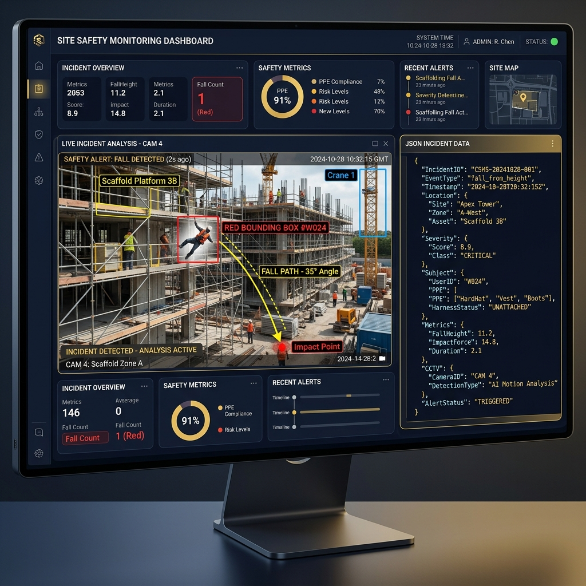

RAG 시스템·Vision-Language Agent·데이터 파이프라인을 직접 설계하고 end-to-end로 배포까지 연결합니다. 건설현장 법령 판단 RAG, CCTV 사고 분석 VL Agent, 공공 API 수요예측 Flask 서비스를 단독 구현했습니다.I design RAG systems, Vision-Language Agents, and data pipelines, delivering them through end-to-end deployment. Personally developed a construction site regulation RAG, a CCTV accident analysis VL Agent, and a public API demand forecasting Flask service.
객관적인 데이터와 최신 AI 기술로 전략을 세우고, 원활한 소통으로 비즈니스 가치를 완성합니다.Formulating strategies with objective data and state-of-the-art AI, and delivering business value through smooth communication.
감이나 경험에만 의존하기보다 정확한 데이터 분석을 바탕으로 설득력 있는 전략을 수립하는 것을 최우선으로 생각합니다. 이를 위해 최신 AI 기술과 다양한 분석 툴들을 빠르게 습득하고 실무에 적극적으로 활용함으로써, 데이터 도출의 효율성을 높이고 더욱 정교한 비즈니스 인사이트를 발굴하고자 노력합니다.I prioritize establishing compelling strategies based on accurate data analysis over relying solely on intuition or experience. To achieve this, I quickly master state-of-the-art AI technologies and diverse analytical tools, actively applying them in practice to maximize the efficiency of data extraction and uncover more sophisticated business insights.
과거 프로젝트 매니저(PM)로 활동하며 체득했듯, 아무리 뛰어난 데이터나 기술적 성과라도 다양한 직군과의 유연한 소통이 뒷받침되지 않으면 무용지물이 될 수 있습니다. 기술을 통해 도출한 핵심 인사이트를 팀원들과 명확하게 공유하고 협업 프로세스에 자연스럽게 녹여냄으로써, 조직의 실제 비즈니스 가치 창출에 기여하고자 합니다.As I learned through my experience as a Project Manager (PM), even the most outstanding data or technical achievement can be rendered useless without flexible communication across diverse teams. I aim to clearly share core insights derived from technology with team members and integrate them naturally into the collaborative workflow, contributing to the organization's actual business value creation.
Experience
💼경력Experience
2023.07 – 2023.09 · 3개월2023.07 – 2023.09 · 3 mos
데이타트렌드Data Trend
사원 · AI사업전략Associate · AI Business Strategy
AI 바우처 사업수행계획서 작성 및 관련 자료 조사Authored AI Voucher project execution plans and conducted market research
AI 도입 기업 대상 솔루션 제안 자료 작성Prepared solution proposals for companies adopting AI
사업 현황 분석 및 보고서 작성Analyzed business status and compiled reports
Education
🎓교육Education
2020.03 – 2026.02
서강대학교Sogang University
미디어공학과 · 학점 3.53 / 4.5B.S. in Media Technology · GPA 3.53 / 4.5
미디어 기술, 데이터 처리, 소프트웨어 공학 관련 전공 과목 이수Completed coursework in media technology, data processing, and software engineering
2026.01 · 수료Jan 2026 · Completed
서울대학교 데이터사이언스 부트캠프Seoul National University Data Science Bootcamp
데이터사이언스를 위한 선형대수학 및 확률과 통계Linear Algebra, Probability & Statistics for Data Science
머신러닝 기초 이론 및 실습Basic Machine Learning Theory and Hands-on Practice
진행 중In Progress
매력일자리 개발자 과정Attractive Jobs Developer Program
최신 AI 기술 트렌드, 데이터 처리, RAGLatest AI technology trends, data processing, and RAG
Python 기반 백엔드 개발 및 데이터 파이프라인 구축Python-based backend development and data pipeline construction
알고리즘, 자료구조, 데이터베이스 심화 학습 및 실무 프로젝트Advanced studies in algorithms, data structures, databases, and hands-on projects
Certificates
🏅자격증Certificates
📊2025.12
빅데이터분석기사Big Data Analytics Engineer
한국데이터산업진흥원Korea Data Agency (KDATA)
🤖2024.11
AI-POT 2급AI-POT Grade II
한국생산성본부Korea Productivity Center (KPC)
🌐2024.10
네트워크관리사 2급Network Administrator (Level 2)
한국정보통신자격협회Korea Association of Information & Telecommunication (KAIT)
Portfolio Projects
🐙주요 프로젝트Featured Projects
이력서에 정리된 프로젝트 목록을 기준으로, 실제 화면과 산출물이 있는 프로젝트는 스크린샷을 함께 배치했습니다.Based on the project list in the resume, screenshots are included for projects that have actual interface screens and deliverables.
1 / 7
construction-accident-vl-agent
Python · Qwen2.5-VL

건설현장 CCTV MP4 영상을 프레임 단위로 분석해 사고 발생 여부, 사고 유형, 사고 원인을 자동 분석하는 Vision-Language Agent 시스템입니다.A Vision-Language Agent system that analyzes construction site CCTV MP4 videos frame-by-frame to automatically detect accident occurrence, accident type, and cause.
원본 영상 전체를 LLM에 넣는 대신, 사고 전후 핵심 프레임을 추출해 Contact Sheet 이미지를 생성함으로써 API 연동 비용을 최소화하였습니다. 최종 분석 데이터는 SPilot ERD 스키마에 맞는 DB Payload 규격으로 자동 가공 연동됩니다.Instead of feeding the entire raw video into the LLM, we extract key frames before and after the accident to generate a Contact Sheet image, minimizing API integration costs. The final analyzed data is automatically processed and mapped into DB Payload specifications matching the SPilot ERD schema.
영상 분석 OpenCV 기반 프레임 분석 및 사고 유력 구간 탐지Video Analysis OpenCV-based frame analysis and detection of high-probability accident segments
LLM 연동 Qwen2.5-VL 모델 서버와 연동하여 사고 유형(추락/낙상 등) 및 경위 판단LLM Integration Integrated with Qwen2.5-VL model server to determine accident types (falls, slips, etc.) and details
Payload 변환 DB 테이블 스키마(cctv_events) 규격에 맞춰 JSON verdict 자동 매핑Payload Conversion Automatically mapped JSON verdict according to the DB table schema (cctv_events)
건설현장 사고 시나리오를 입력받아 산업안전보건법·중대재해처벌법 위반 조항과 책임 주체를 판단하는 RAG 시스템입니다.A RAG system that receives construction site accident scenarios and identifies violated clauses of the Occupational Safety and Health Act & Serious Accident Punishment Act, along with liable parties.
법령 본문과 별표/표를 별도 ChromaDB에 분리 임베딩한 Text RAG + Table RAG 이중 구조로 검색 정확도를 높였습니다. 질문 유형별 direct route와 관리자/일반 계정 분리, 대화 이력 SQLite 저장, CLI+웹 챗봇 UI 2종을 구현했습니다.Improved retrieval accuracy through a dual structure of Text RAG + Table RAG, separating the law text and tables into independent ChromaDB embeddings. Implemented direct routing by question type, admin/user role separation, SQLite chat history storage, and two interfaces (CLI and Web chatbot UI).
이중 RAG Text RAG + Table RAG 분리: 별표/표를 pdfplumber로 추출해 독립 ChromaDB에 임베딩Dual RAG Separated Text RAG & Table RAG: Extracted annexes and tables with pdfplumber and embedded them into a separate ChromaDB
라우팅 질문 유형별 direct route로 정형 질의 처리, Colab Pro Qwen2.5-14B로 자연어 판단Routing Processes structured queries via direct routing by question type, and utilizes Colab Pro Qwen2.5-14B for natural language reasoning
운영 관리자/일반 계정 분리 · 대화 이력 SQLite 저장 · CLI + HTML 웹 챗봇 UI 2종Operations Admin/general account separation, SQLite storage for chat history, and both CLI and HTML web chatbot interfaces
다나와 PC 부품 가격 자동 수집, 이상치 탐지, 가격 예측 모델, IT 뉴스 대시보드를 연결한 분석 서비스입니다.An analytics service integrating Danawa PC component price web scraping, anomaly detection, price forecasting models, and an IT news dashboard.
단독 개발로 크롤링, SQLite 데이터 모델링, 분석 로직, Streamlit 대시보드를 연결해 가격·뉴스 데이터 흐름을 통합했습니다.Independently developed the scraping pipeline, SQLite data modeling, analytical logic, and Streamlit dashboard to integrate price and news data flows.
Unity2D 기반 게임 프로젝트 팀장 및 기획 총괄, 역할 분배와 일정 관리를 포함해 전 과정을 리딩했습니다.Served as project manager and lead designer for a Unity2D-based game, leading the entire lifecycle including role assignment and scheduling.
PM 역할로 게임 콘셉트와 개발 범위를 정리하고, 팀원 역할 분배와 진행 관리를 맡아 완성 화면까지 이끌었습니다.As PM, defined the game concept and scope, distributed tasks, managed progress, and guided the team to deliver the final playable interface.
SQL, RFM 분석, 머신러닝, 시계열 예측, SQLD까지 직접 설계하고 수행한 이커머스 분석 파이프라인입니다.An e-commerce analysis pipeline designed and executed covering SQL queries, RFM analysis, machine learning classification, time series forecasting, and SQLD principles.
단독 개발로 분석 주제 선정부터 notebook 실험, RFM·Prophet·SHAP 결과 정리와 대시보드 시각화까지 수행했습니다.Independently handled everything from selecting analysis topics, running experiments in Jupyter notebooks, summarizing RFM, Prophet, and SHAP results, to dashboard visualization.
Streamlit 기반 영단어 학습 웹 앱으로, 학습 진도 추적과 퀴즈, 단어장, 통계 화면을 구현했습니다.A Streamlit-based English word learning web app, featuring study progress tracking, quizzes, vocabulary management, and stats dashboards.
단독 개발로 학습 흐름, 퀴즈 상태 관리, 단어장 관리, 통계 화면을 구성하며 사용자 중심 앱 구조를 연습했습니다.Independently developed the learning flow, quiz state manager, vocabulary list, and statistics panel to practice user-centric app architecture.
오늘의집 O2O 서비스팀 시나리오 기반, 102개 시군구 인테리어 수요 점수를 산출하는 end-to-end 파이프라인입니다.An end-to-end pipeline calculating interior renovation demand scores across 102 districts based on an Oohya (Today's House) O2O service scenario.
국토교통부 매매·전월세·건축HUB 대수선 등 공공 API 5종을 자동 수집하고, 7개 지표 Min-Max 정규화 + 가중합산으로 수요 점수(0~100)와 S/A/B 등급을 산출합니다. Flask 웹 서버 + 네이버 지도 연동 + AI 챗봇 2종(Ollama)까지 배포했습니다.Automatically collects data from 5 public APIs (Ministry of Land transaction, rent, Building HUB, etc.) and computes demand scores (0~100) and S/A/B grades via Min-Max normalization and weighted summation of 7 indicators. Deployed Flask web server with Naver Maps integration and two AI chatbots (Ollama).
파이프라인 공공 API 5종 자동 수집: 국토부 매매·전월세·건축HUB 대수선·인테리어업체·상가정보Pipeline Automated collection of 5 public APIs: transaction, rent, Building HUB renovation, interior firms, and commercial area info
점수 산출 7개 지표 Min-Max 정규화 + 가중합산, S/A/B+/0/- 등급 분류, 시장규모 추정 컬럼 자동 산출Score Calculation Min-Max normalization & weighted sum of 7 metrics, S/A/B grading classification, and automated market size estimation columns
서비스 Flask RESTful API 10개 · 네이버 지도 마커 연동 · AI 챗봇 2종(수요점수 + 구매가이드)Service Deployed 10 Flask RESTful API endpoints, Naver Maps marker linkage, and two AI chatbots (demand scoring & buyer's guide)
주요 개발·PM 경험이 뚜렷한 네 프로젝트를 중심으로 문제 정의부터 역할, 결과, 개선점까지 정리했습니다.Details on problem definition, roles, results, and future improvements for five core development and PM projects.
Python · Qwen2.5-VL · Computer Vision
construction-accident-vl-agent
문제 정의Problem Definition
건설현장 CCTV 영상에서 사고 상황을 자동으로 신속하게 감지하고 사고 유형, 피해 규모 및 원인 파악을 자동화하여 현장 안전관리를 개선하고자 했습니다.Aimed to improve site safety management by automatically and rapidly detecting accident situations from CCTV footage and automating analysis of accident type, severity, and cause.
데이터 흐름Data Flow
CCTV mp4 비디오 파일로부터 프레임 이미지를 주기적으로 추출하고, 주요 움직임이 포착된 전후 프레임을 결합해 Contact Sheet 이미지를 구성해 Qwen2.5-VL 서버에 전달합니다.Periodically extract frames from CCTV MP4 video files, combine the before/after frames capturing major movements into a Contact Sheet image, and transmit it to the Qwen2.5-VL server.
핵심 로직Core Logic
전체 비디오를 LLM에 전송하는 대신, Agent 로컬 단에서 OpenCV를 활용해 대표 프레임을 추리고 사고 위험이 높은 시점의 전후 프레임을 경량화하여 처리 효율을 극대화했습니다.Instead of uploading the full video to the LLM, the local agent uses OpenCV to filter representative frames and lightweight the before/after frames at high-risk moments to maximize processing efficiency.
사용 기술Technologies
Python, OpenCV, Qwen2.5-VL (Colab Server API), Pydantic(검증 스키마 설계), .env 환경 변수를 구성해 외부 API 클라이언트 흐름을 연동했습니다.Python, OpenCV, Qwen2.5-VL (Colab Server API), Pydantic (schema validation), .env configurations for external API client flow integration.
내 역할My Role
단독 개발로 OpenCV 기반 프레임 분석 및 사고 유력 구간 탐지 모듈 설계, Qwen2.5-VL용 다중 이미지 프롬프트 엔지니어링, SPilot ERD 데이터 규격 매핑 및 DB payload JSON 가공 로직 구현.Sole developer. Designed the OpenCV-based frame analysis and high-probability segment detection module, engineered multi-image prompting for Qwen2.5-VL, mapped SPilot ERD data specs, and implemented DB payload JSON processing.
답변 결과Results & Outputs
추락 사고가 감지된 영상 분석 시, 사고 유형을 "fall_from_height"(추락)로 정확히 탐지하고, 이동식 비계 위 작업자 위치 변화와 붕괴 과정에 대한 구체적인 사고 원인 경위(Details)를 JSON 형태로 도출해 냈습니다.When analyzing footage detecting a fall accident, it accurately identified the type as "fall_from_height", and generated detailed narratives (Details) on the scaffold worker's position change and the collapse progression in JSON.
한계와 개선점Limitations & Improvements
추가적인 YOLO 객체 추적(Worker tracking) 모델 및 작업자 포즈 추정(Pose estimation) 모듈과 결합 시, 작업자 개별 식별 및 사고 전 거동 분석 성능이 더욱 극대화될 수 있습니다.Integrating with a YOLO worker tracking model and pose estimation module would maximize individual worker identification and pre-accident behavior analysis performance.
Python · RAG · Safety Management
k-safety-law-rag
문제 정의Problem Definition
건설현장 안전관리 프로젝트에서 사고 상황을 입력했을 때 관련 중대재해처벌법, 산업안전보건법 조항과 위반 가능성을 빠르게 확인할 수 있는 관련법령 RAG 파트가 필요했습니다.Needed a regulation RAG component to quickly check relevant clauses of the Serious Accident Punishment Act and Occupational Safety and Health Act, along with violation probability, when accident details are input in a site safety management project.
데이터 흐름Data Flow
법령 PDF를 pdfplumber로 본문·표 분리 추출 → Text·Table 각각 ChromaDB에 임베딩 → 통합 retriever로 유사도 합산 → 질문 유형 판단(direct route / LLM route) → 위반 조항·책임 주체·법령 페이지 출력Extract law texts and tables separately via pdfplumber → Embed Text and Tables into separate ChromaDB → Combined retriever calculates similarity sum → Route query type (direct route vs. LLM route) → Output violated clauses, responsible parties, and reference pages.
시나리오 검증Scenario Verification
아파트 신축 현장에서 철제 자재 낙하로 근로자가 사망한 사례를 입력하고, 해당 사고가 중대재해처벌법상 중대산업재해에 해당하는지와 판단 근거를 함께 질의했습니다.Input a case where a worker died due to falling steel materials at an apartment construction site, and queried whether this falls under serious industrial accidents under the Serious Accident Punishment Act, along with the reasoning.
Text RAG + Table RAG 이중 구조 설계, 질문 유형별 direct route 구현, 관리자/일반 계정 분리, SQLite 대화 이력 저장, CLI + HTML 웹 챗봇 UI 2종 구현, 법령 참고 JSON 자동 저장 구조 전체 단독 개발Sole developer. Designed dual Text+Table RAG structure, implemented question-type direct routing, set up admin/user role separation, configured SQLite chat history, and developed CLI + HTML chatbot interfaces.
답변 결과Results & Outputs
Qwen2.5-14B 모델이 사고를 중대산업재해로 판단하고, 사망자 1명 발생 및 상시 근로자 5명 이상 사업장 기준을 근거로 중대재해처벌법 제2조와 제3조를 제시하도록 응답을 받았습니다.The Qwen2.5-14B model correctly classified the incident as a serious industrial accident, citing the occurrence of 1 death and the 5+ regular workers criteria, presenting Articles 2 and 3 of the Serious Accident Punishment Act.
결과 화면Result Interface
건설현장 안전관리 화면에서 사고 정보, 위반 판단, 판단 근거, 관련 법령 조항, 참고 근거 유사도, 응답 시간을 함께 확인할 수 있도록 구성했습니다.Configured the interface to display accident info, violation judgment, reasoning grounds, relevant clauses, reference similarity score, and API response time.
한계와 개선점Limitations & Improvements
법령 조항의 최신성 관리와 답변 검증 체계를 더 강화하고, 사고 유형별 평가 기준을 구조화하면 실무 적용성이 높아질 수 있습니다.Strengthening version management for regulations, enhancing verification metrics, and structuring evaluation criteria by accident type would improve practical utility.
Python · Streamlit · SQLite
market-pulse
문제 정의Problem Definition
PC 부품 가격과 IT 뉴스를 따로 확인해야 하는 불편을 줄이고, 가격 변화·이상치·예측 결과를 한곳에서 볼 수 있는 분석 도구를 만들고자 했습니다.Aimed to build an integrated tool displaying price trends, anomalies, and forecasting results in one place, avoiding the inconvenience of separate checks for component prices and IT news.
데이터 흐름Data Flow
다나와 가격 데이터를 수집해 SQLite에 저장하고, 부품 카테고리별 가격 추이와 뉴스 데이터를 Streamlit 대시보드로 시각화했습니다.Scrape Danawa price data, store it in SQLite, and visualize category price trends and IT news feeds on a Streamlit dashboard.
사용 기술Technologies
Python, BeautifulSoup (scraping), SQLite, Machine Learning, Streamlit (end-to-end integration of collection, storage, analysis, forecasting, and UI)
내 역할My Role
단독 개발로 크롤러, 데이터베이스 구조, 분석 로직, 이상치 탐지, 가격 예측 화면과 뉴스 탭까지 전체 기능을 설계하고 구현했습니다.Independently built the scraper, database schema, analytics logic, anomaly detection, price forecasting dashboard, and IT news tab.
결과 화면Result Interface
카테고리별 가격 추이, 이상치 탐지, 예측 그래프, 관련 뉴스 탭을 제공해 가격 흐름과 시장 맥락을 함께 파악할 수 있게 했습니다.Provided category price trends, anomaly markers, forecast charts, and a news tab to analyze price movements in tandem with market context.
한계와 개선점Limitations & Improvements
크롤링 안정성, 데이터 갱신 자동화, 예측 모델 평가 지표를 보강하면 더 운영 가능한 가격 모니터링 서비스로 확장할 수 있습니다.Enhancing scraping resilience, automating data updates, and refining forecasting metrics would scale it to a production-ready price monitoring service.
Python · Flask · Public Data
O2O-demand-forecasting-solution
문제 정의Problem Definition
오늘의집 O2O 서비스 관점에서 어느 지역의 인테리어 시공 수요가 높은지 판단할 수 있도록, 실거래 데이터 기반 수요 점수 체계가 필요했습니다.Needed a transactional-data-based demand scoring framework to identify high-potential interior renovation regions from the perspective of Oohya (Today's House) O2O services.
데이터 흐름Data Flow
공공 API 5종 자동 수집(국토부 매매·전월세·건축HUB 대수선·인테리어업체·상가정보) → 전처리·세그먼트 분류 → 7개 지표 정규화 → Flask API → 네이버 지도 + 대시보드 + AI 챗봇 2종Automated collection of 5 public APIs → Preprocessing & segmentation → 7-metric normalization → Flask API → Naver Maps + Dashboard + Dual AI Chatbots.
핵심 로직Core Logic
7개 지표(거래건수·전월세건수·거래금액·노후도·면적·신규입주·대수선이력) Min-Max 정규화 + 가중합산 수요점수 0~100 산출. 등급 S+/S0/S-/A+/A0/A-/B+… 세분화. 예상 시공비·시장규모 추정 컬럼 자동 산출.Min-Max normalization and weighted sum of 7 indicators (transactions, rents, prices, building age, area, new moves, renovations) to yield a 0-100 demand score. Finely graded (S+, S0, S-, etc.) and estimated market size and renovation costs dynamically.
내 역할My Role
공공 API 5종 연동 · 파이프라인 설계 · Flask RESTful API 10개 엔드포인트 · 네이버 지도 마커 연동(등급/시장규모 모드 토글) · AI 챗봇 2종(Ollama qwen2.5:3b, SQLite 대화 이력) · fuzzy 검색 전체 단독 개발Independently built the 5-API integration, pipeline architecture, 10 Flask API endpoints, Naver Maps marker toggle modes (Grade vs. Market Size), and dual AI Chatbots (Ollama, SQLite chat history).
결과 화면Result Interface
KPI 카드, TOP 10 수요 점수 차트, S/A/B 등급 랭킹 테이블, 시도 필터, 지역·단지명 검색, 점수 산정 설명 화면을 구성했습니다. AI 챗봇 2종(수요점수 챗봇·첫집 구매 가이드)과 네이버 지도 수요 등급 마커까지 통합한 end-to-end 서비스로 완성했습니다.Designed KPI cards, top-10 demand charts, S/A/B rank tables, search filters, and formula explanations. Delivered an end-to-end service integrating dual AI chatbots (demand helper & home buyer guide) and Naver Maps markers.
한계와 개선점Limitations & Improvements
cron 기반 월별 자동 갱신 스케줄러 추가, AI 챗봇 응답 품질 평가 지표(RAGAS 등) 도입, 지도 클러스터링 고도화를 통해 실 서비스 수준으로 확장 가능.Can be scaled by adding monthly cron schedulers, introducing LLM evaluation metrics (e.g., RAGAS), and implementing advanced map marker clustering.
C# · Unity2D · Project Management
Artesia
문제 정의Problem Definition
짧은 기간 안에 Unity2D 게임의 핵심 플레이 흐름, 화면 구성, 팀원별 구현 범위를 정리하고 완성 가능한 개발 계획으로 바꾸는 것이 필요했습니다.Needed to structure the core gameplay loop, screen layouts, and developer scopes for a Unity2D game, transforming them into an achievable production schedule in a limited timeframe.
진행 방식Methodology
게임 시작, 거점, 던전 입장, 탐색 턴, 이벤트 선택, 전투 처리, 아이템 처리, 결과 분기까지 전체 유저 흐름을 정의하고 단계별 구현 우선순위를 정했습니다.Mapped out the complete user journey (game startup, base town, dungeon entry, turn-based exploration, event selection, combat, items, and branching endings) and prioritized feature tasks.
사용 기술Technologies
C#과 Unity2D를 기반으로 캐릭터, 던전, 이벤트, 전투, 아이템, UI 화면이 하나의 플레이 루프로 연결되도록 프로젝트 범위와 기능 단위를 관리했습니다.Managed the scope and feature units based on C# and Unity2D to connect characters, dungeons, events, combat, inventory, and UI screens into a single gameplay loop.
내 역할My Role
PM으로서 게임 콘셉트 정리, 기능 명세, 역할 분배, 일정 관리, 진행 상황 점검을 맡아 팀이 같은 목표와 우선순위로 움직이도록 조율했습니다.As PM, formulated the concept, wrote functional specs, assigned developer roles, scheduled sprints, and tracked progress, keeping the team aligned on unified goals.
결과 화면Result Interface
유저 게임 진행 흐름도와 캐릭터·던전·전투·인벤토리 화면을 연결해, 기획한 플레이 루프가 실제 화면으로 구현되는 과정을 정리했습니다.Linked the user gameplay flowcharts with screens of characters, dungeons, combat, and inventory to document the realization of the conceptualized loop.
배운 점Key Takeaways
PM 역할을 통해 기능을 많이 넣는 것보다 완성 가능한 범위를 정하고, 팀원 간 책임과 의사결정 기준을 명확히 하는 것이 프로젝트 완성도에 중요하다는 점을 배웠습니다.Through the PM role, I learned that setting a realistic scope and defining clear responsibilities and decision-making criteria among team members are far more critical than feature bloating.
Strengths
💡핵심 강점Core Strengths
01
데이터 분석Data Analysis
빅데이터분석기사 보유. 공공 API 5종 파이프라인, RFM·Prophet·SHAP 실전 적용, Flask 서비스 배포까지 end-to-end 구현 경험.Holds Big Data Analysis Engineer certification. End-to-end implementation experience: 5-API pipelines, RFM/Prophet/SHAP analytics, and Flask service deployment.
02
AI 개발AI Development
Text RAG + Table RAG 이중 구조 직접 설계, CCTV 영상 → Contact Sheet → VL 판단 파이프라인 구현, Colab 원격 LLM 서버 아키텍처 구성.Designed dual Text+Table RAG structures, implemented CCTV footage-to-Contact Sheet VL analysis pipelines, and configured Colab remote LLM server architectures.
03
인프라 이해Infrastructure & Operations
네트워크관리사 2급. Flask RESTful API 설계, SQLite DB 모델링, TypeScript 프론트엔드, Django 앱 개발 경험 보유.Holds Network Administrator (Level 2) certification. Experienced in Flask RESTful API design, SQLite DB schema design, TypeScript frontends, and Django app development.
희망 근무지Desired Location서울 · 경기 전지역All areas of Seoul and Gyeonggi
지원 직무Target Positions데이터엔지니어 / AI 개발Data Engineer / AI Development
희망 연봉Desired Salary면접 후 결정Negotiable after interview
Contact
데이터와 AI가 만나는 지점에서 일하고 싶습니다.I want to work at the intersection of data and AI.
프로젝트 협업, 채용 제안, 포트폴리오 피드백은 이메일 또는 GitHub로 연락해 주세요.Please reach out via Email or GitHub for project collaborations, job offers, or feedback on my portfolio.